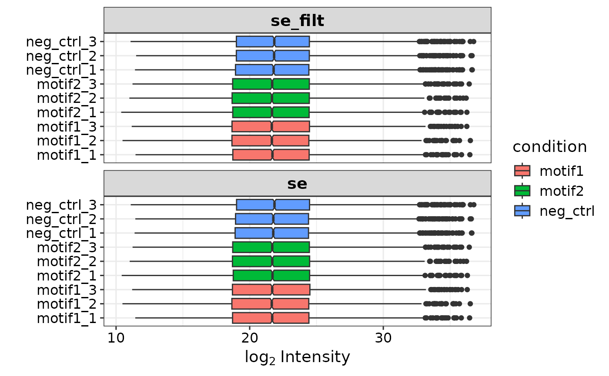

Plots the coverage of proteins.
Usage
plot_protein_coverage(
se,
genes,
positions = NULL,
zoom = NULL,
fasta = NULL,
organism = "hs",
combine_overlap = T,
dodge_labels = T,
scaling = "centered",
condition_order = NULL
)Arguments
- se
The SummarizedExperiment object from prepare_se.
- genes
The gene names of the proteins that you would like to plot.
- positions
A numeric vector indiciting the amino acid positions that you want to highlight.
- zoom
A numeric with two values (start and stop) indicating the specific part of the protein that you want to plot.
- fasta
Data frame with protein information when not using a default option. See get_ibaq_peptides
- organism
Specifies which default protein database to use. 'hs' for human, or 'mm' for mouse.
- combine_overlap
Boolean specifying whether to combine miscleaved peptides.
- dodge_labels
Boolean specifying wheter position labels should be plotted on different heights so that they do not overlap in the plot.
- scaling
Boolean value indicating whether the peptide intensities should be centered over the different replicates.
- condition_order
Character vector that specifies the order of the conditions on the y-axis.
Examples
se <- prepare_se(report.pg_matrix, expDesign, report.pr_matrix)

#> Imputing along margin 2 (samples/columns).
#> [1] 0.3066195
#> Imputing along margin 1 (features/rows).
#> Warning: 36 rows with more than 50 % entries missing;
#> mean imputation used for these rows
#> Cluster size 5574 broken into 3662 1912
#> Cluster size 3662 broken into 1462 2200
#> Done cluster 1462
#> Cluster size 2200 broken into 1110 1090
#> Done cluster 1110
#> Done cluster 1090
#> Done cluster 2200
#> Done cluster 3662
#> Cluster size 1912 broken into 1379 533
#> Done cluster 1379
#> Done cluster 533
#> Done cluster 1912
smad4 <- plot_protein_coverage(se, 'SMAD4', positions = c(100, 150))
#> Warning: Duplicated aesthetics after name standardisation: ymin
#> Coordinate system already present.
#> ℹ Adding new coordinate system, which will replace the existing one.
# Zoom in on first 200 AA of protein
smad4 <- plot_protein_coverage(se, 'SMAD4', positions = c(100, 150), zoom = c(1, 200))
#> Warning: Duplicated aesthetics after name standardisation: ymin
#> Coordinate system already present.
#> ℹ Adding new coordinate system, which will replace the existing one.